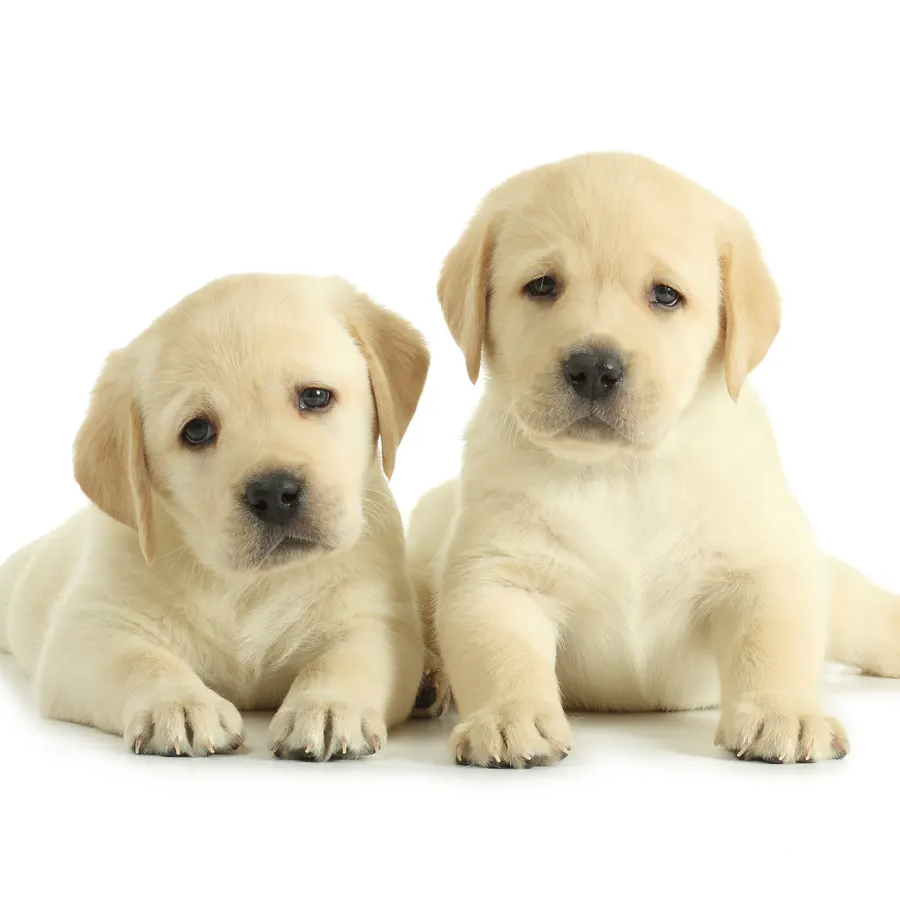

Labrador
| Weight: |
25-30 kg |
| Color: |
Golden, brown, black |
| Coat: |
Short-haired |
The Labrador Retriever or simply Labrador is a British breed of
retriever gun dog. It was developed in the United Kingdom from fishing
dogs imported from the colony of Newfoundland (now a province of
Canada), and was named after the Labrador region of that colony. It is
among the most commonly kept dogs in several countries, particularly
in the Western world. The Labrador is loyal, obedient and playful. It
was bred as a sporting and hunting dog but is widely kept as a
companion dog. It may also be trained as a guide or assistance dog, or
for rescue or therapy work. In the 1830s, the 10th Earl of Home and
his nephews the 5th Duke of Buccleuch and Lord John Scott,[3] imported
progenitors of the breed from Newfoundland to Europe for use as
gundogs. Another early advocate of these Newfoundland fishing dogs was
the 2nd Earl of Malmesbury, who bred them for their expertise in
waterfowling. During the 1880s, the 3rd Earl of Malmesbury, the 6th
Duke of Buccleuch, and the 12th Earl of Home collaborated to develop
and establish the Labrador Retriever breed. The dogs Buccleuch Avon
and Buccleuch Ned, given by Malmesbury to Buccleuch, were mated with
bitches carrying blood from those originally imported by the 5th Duke
and the 10th Earl of Home. The offspring are the ancestors of all
modern Labradors.